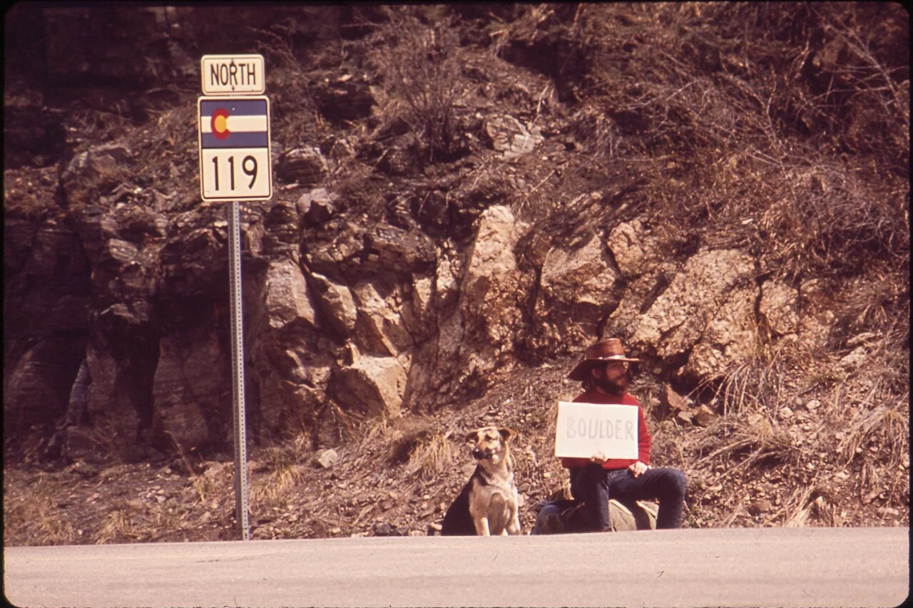
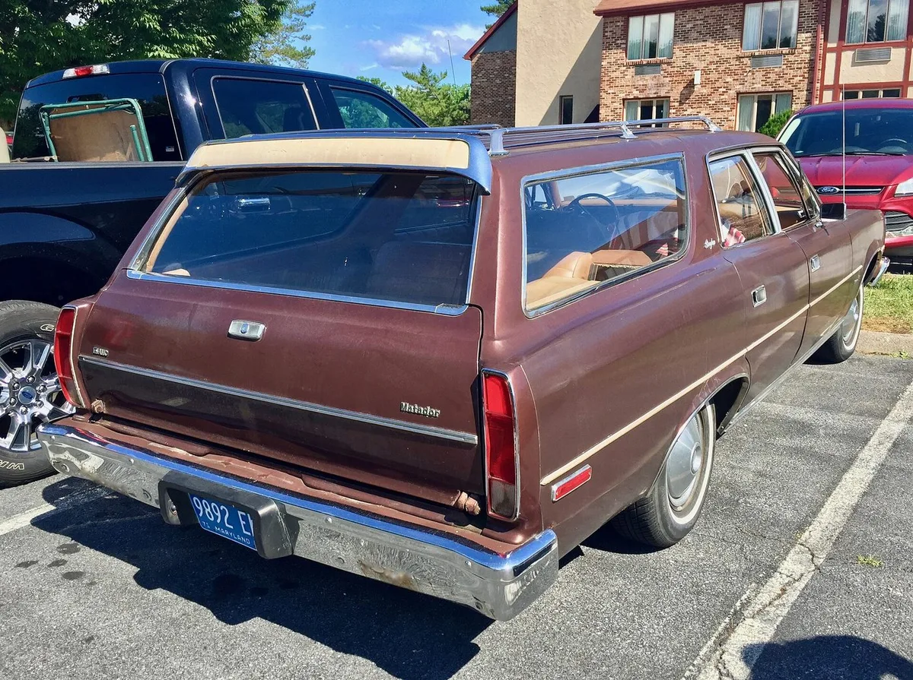

The Cars Everyone Wanted: Mustang, Beetle, Impala and the Rest
Chrome, vinyl roofs and a tank of leaded gas. Which one was parked in front of your house?
AI-created period illustration
Read the storyREMEMBER THIS? - HOME & EVERYDAY LIFE - 1950s-70s
Tail fins, a wide back seat, and a paper map in the glove box. And for everyone without a car: the bus stop, the bicycle, a long walk and an outstretched thumb.
Think of the family car. Not the make or the model, just how it felt. The big back seat, the smell inside on a warm day, the crank on the window, the radio that got one station clearly and three others in pieces.
For some families the car was the center of everything: Sunday drives, the trip to the lake, the Saturday wash in the driveway. For others it was something the neighbors had. Here is a look at both.

In the late 1950s, American cars grew tail fins. Cadillac had added modest bumps to its rear fenders in 1948, and by 1959 its fins were the highest ever put on an American production car. Whether or not you ever rode in one, you probably remember the look: chrome, curves and a back end that seemed to point to the future.
Maybe your family's car was less dramatic, but it still had a name that sounded like a promise. Maybe the neighbors' car was the one everyone walked over to admire.

By the 1960s and '70s, the family station wagon was a common sight in driveways. Maybe your family had one, or a cousin's family did. Maybe you rode in the back, facing backward, with a window all to yourself.
Seat belts were a different story from today. Federal rules required belts to be installed in all new passenger cars from 1968. Before that, and in older cars after that, a seat belt could be a rarity, or a buckle tucked down into the seat that nobody used.

Gas stations had attendants in uniform who came out when you pulled up. They filled the tank, washed the windshield and checked the oil without being asked. Maybe you remember the bell that rang when a car crossed the hose, and the smell of rubber and gasoline.
The station was also where you got your maps. It was part of the trip.

Before screens told you where to turn, there was paper. Free road maps were handed out at almost every gas station in the United States from about 1925 to 1975, according to one study of them. Chevron, Shell, Sinclair and many others gave them out.
Opening one in the passenger seat was a skill. Folding it back into its original shape was a harder one. Someone in the car was always sure they knew the way. Someone else held the map.
Family road trips were at their peak in the 1960s and '70s, the writer Richard Ratay says in his history of them, with the interstate highways spreading across the country just as cars became a fixture outside family homes.

For many fathers and sons, Saturday meant a bucket, a sponge and a hose. The car got washed, waxed and polished until you could see the sky in the hood. If you were small, you got the job of the hubcaps, and you remember the water running down the driveway.

Not every family had a car, and even those that did often had one for a whole household. So you found another way.
Maybe it was a bicycle. In 1963 Schwinn launched the Sting-Ray, a low child's bike with a "banana" seat and high handlebars, and for many children it meant freedom to go farther. Maybe it was simply walking, to school, to the store, to a friend's house.

Maybe it was the bus, with a pass in your pocket and a favorite seat by the window. You learned the schedule, and the driver's name, and where to get off. The bus stop was a place where neighbors talked.
You also learned the sound of the doors and the smell inside. Some of us can still tell you how much a ride cost.

And for some, especially young people and travelers in the 1960s and early '70s, it was a thumb held out at the side of the road. Hitchhiking was a common sight from the Depression through the mid-1970s, according to historians, before it faded.
Think of the first place you could go by yourself. Was it a corner store, a library, a friend's house? How did you get there: a bus, a bicycle, your own two feet, a ride from someone with a car?
Share this with someone who made that same trip. They might remember the route you forgot.
Chrome, vinyl roofs and a tank of leaded gas. Which one was parked in front of your house?
AI-created period illustration
Read the story
A recipe tin, a well-used apron, and a table where there was always room for one more.
Read the story
13 questions. No timer.
Photo: CZmarlin, CC0, via Wikimedia Commons.
Take the quiz← Back to Dear Old Days · All articles · About · Privacy policy · Photo credits · Cookie settings